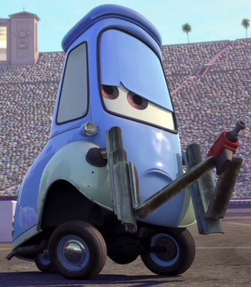

Bonjour et bienvenue sur mon Portfolio !
Je suis Nolann, Etudiant a l'AFTEC de Rennes depuis septembre 2023 et Technicien Support HelpDesk pour le groupe Denis Matériaux en contrat d'alternance
L'AFTEC De Rennes
L’école AFTEC est pluridisciplinaire et propose plus de 14 formations de niveau BTS (Bac+2) et 2 titres professionnels accessibles en initial et en alternance dans divers domaines : Banque et Assurance, Comptabilité et Gestion, Communication, Commerce, Digital, Immobilier, Informatique, Tourisme, Logistique et Transport, Ressources Humaines, Audiovisuel, Sanitaire et Social. Avec plus de 650 étudiants, l’école AFTEC de Rennes est un leader sur le département.
Denis Materiaux
Je suis, depuis septembre 2023, en contrat d'alternance chez denis materiaux, j'accompagne un second technicien ainsi qu'un administrateur et un alternant en administration dans le maintien operationnel de l'infrastructure ainsi que le support sur differents materiels et logiciels tels que les imprimantes, les ordinateur, les smartphone ainsi que les differents l'ogiciels ERP (outils de vente) et les applications métiers